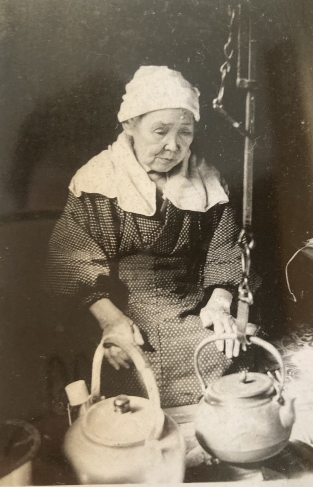

白黒写真のカラー化
1枚 980円
AIで色を付けたあと、肌・着物・空の色を手で整えます。軽いゴミ取り込み。


Yellowman’s Room
STUDIO古い白黒写真をカラーに。写真1枚を、ほほえみ、うなずく「動く写真」に。手元の写真を、自作の曲が流れる思い出のショートムービーに。大切な一枚を、もう一度ご家族で見られる形に仕立てます。
古い白黒写真1枚から作った「動く写真」です。色も表情の動きも、この1枚から作りました。

料金はすべて税込です。どれもデータ（写真はJPEG、動画はMP4）でお届けします。
1枚 980円
AIで色を付けたあと、肌・着物・空の色を手で整えます。軽いゴミ取り込み。
1枚 ＋1,000円
傷・折れ・しみ・色あせを直します。カラー化やムービーに追加できます。
1本 2,980円
写真1枚から約10秒の動画に。白黒写真はカラー化も込みです。
1本 6,980円
写真20枚まで・約90秒。ゆっくり動く写真、字幕、自作曲のBGM付き。縦型・横型どちらでも。
1本 12,800円
写真60枚まで・3〜5分。法事、米寿・還暦、金婚式などに。
| 写真の追加（10枚ごと） | ＋1,000円 |
|---|---|
| ムービーに動く写真を入れる（1本ごと） | ＋1,980円 |
| お急ぎ（3日以内） | ＋3,000円 |
| DVDでのお届け（送料込み） | ＋2,500円 |
| 3回目以降の修正 | 1回＋1,000円 |
開店記念：先着10件はモニター価格（20%引き）。仕上がりを見本として載せてよい方、ご感想をお寄せいただける方が対象です。
ムービーの曲は、作曲のページにあるインストゥルメンタルから選べます（おまかせも可）。市販の曲のような著作権の心配がなく、ほかのムービーと曲が重なりません。
目安：カラー化・動く写真は約3日、ムービーは約7日（写真がそろってから）。
写真を添えて、メールでお気軽にどうぞ。